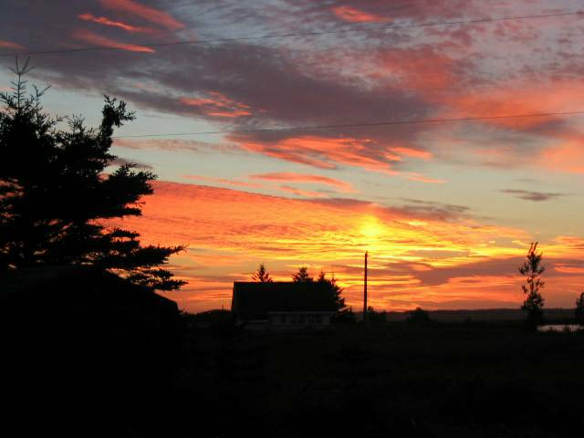
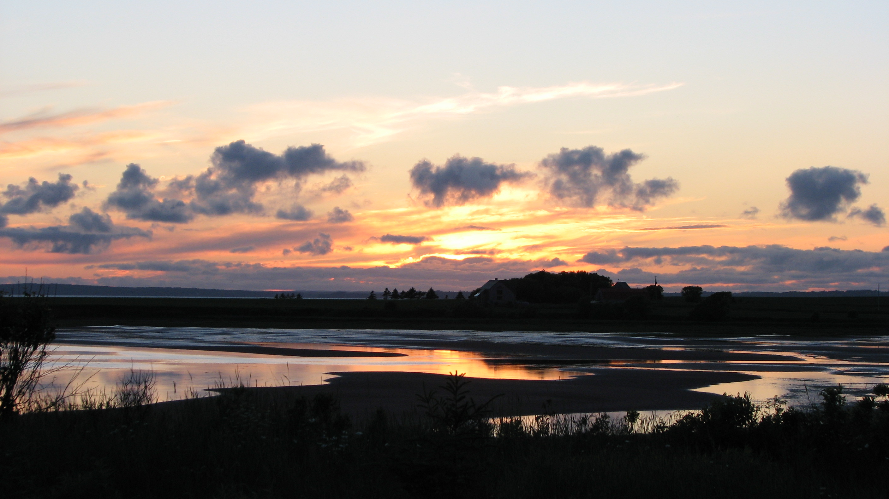

The Family Chronicle
No. 200 November 11, 2010
__________________________________________________________________


Photos
Some spectacular sunrises and sunsets at our cottage on Orwell Bay, P.E. I., Canada.
Along the way, I:
Was in touch with descendants of all five of the original Harley siblings, of which my Great Grandmother, Margaret (Harley) was one. All five arrived in New Brunswick from Ireland in the 1820’s. My Email address book, two hundred years later, includes one or more descendants from each branch.
Learned the exact date, January 24, 1908, that my mother landed in Portland from New Brunswick. It was the day the Portland City hall burned; a phone call to the Portland City library confirmed the date
Realized how few photos of early farm equipment exist in family albums. Following the issue on “sleds”, a lady from Minnesota Emailed me asking for a photo.
Heard from a caregiver in Germany, who contacted me on behalf of her patient, seeking the name of a female Glendenning he had met many years earlier. Unfortunately, I was not able to be helpful.
Realize that the names on the flyleaf of my Great Grandfather Glendinning’s siblings were real people. I now have information on two others from that page, and had direct correspondence with descendants of one.
Found a “real” fourth cousin, Eva (Williston) Dorn now living in California; we are related through the MacNaughtons
Received many enquiries from readers and was able to put some in touch with their roots.
Heard from Uncle Jack Watling’s step granddaughter, named Jacqueline after Uncle Jack, who filled in some blanks about Uncle Jack.
Realize that there were four distinct Glendinning/Glendenning families from Dumfriesshire, Scotland who came to New Brunswick in the early 1800’s; they settled in Canobie, St. John, Galloway near Rexton and Big River near Bathurst. Although all came from Dumfriesshire, I was not able to establish a family linkage.
Was able to link descendants of the Glendennings of Galloway, NB with cousins in Scotland.
Always thought that Glendenning was a rare name, but soon changed my mind when I started looking for Watling relatives.
Found that the earliest Jubal Watling, married to Susan Leach, lived on Prince Edward Island, married again and had another family.
Learned that ancestors of the MacBeaths of Moncton were among the original settlers in Upper Black River. (Our first home after we were married was in the home of Ron MacBeath, 735 Mountain Road, Moncton, NB.
Learned that lore of many families includes reference to a brother of the original immigrants who went west and was never heard of again.
Dear Readers:
I’m winding up a number of writing projects at the present time: Family Chronicle, Recollections of my Holland College Years and reports from my family database. I f time permits, I may also put pen to paper to record some thoughts on education. We’ll see. In the meantime, I will draw this initiative to a close with issue 200.
I am indebted to many people for suggesting items, for answering my calls for help, and just for keeping in touch. Whoever you are and wherever you live, relative, friend and reader alike, thank you one and all.
A copy of Volume One, the First 100 was deposited with both the Chatham Library and the New Brunswick Archives; I’ll do the same with this volume. If interested, I’d be glad to provide print copies at cost. Send me an email.
If any readers are seeking information about family roots and think that I can help, please do not hesitate to contact me.
I would be delighted to remain in touch with readers; send an email or check my website to see if anything further develops.
Thanks and warm wishes to all.
Peace and Good Health
In the
New Year
The Chronicle is an occasional newsletter published by Don Glendenning and posted on the family website. It is intended to share information about my family, community and the times in which I grew up. While every effort is made to be accurate, errors are likely to occur. Comments, enquiries and information may be sent to 62 Queen Elizabeth Drive, Charlottetown, PEI, C1A 3A9. Tel: 902 892 5859. Email: don@glendenning.net Web: www.glendenning.net/don